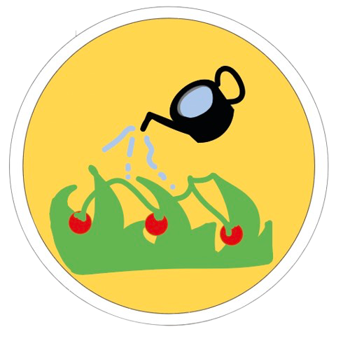
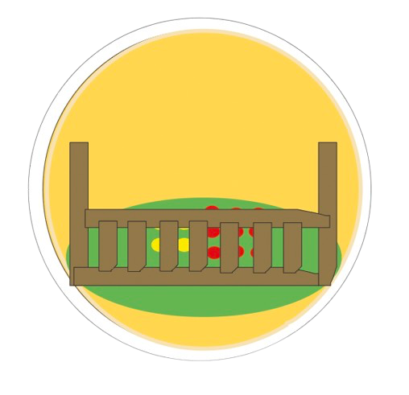
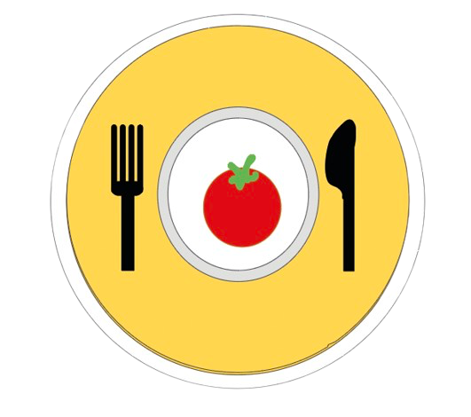

Het voedsel
De groentes die ze bij dit cafe serveren komt uit hun eigen moestuin. Hierdoor gebruiken ze natuurlijke producten wat goed voor de natuur is.
Duurzaamheid
Moestuin
Het voedsel wordt op een duurzame manier bereidt, omdat de groentes in een moestuin achter het cafe wordt gekweekt
Natuurlijk
De kwekerij verloopt op een natuurlijke manier. Er worden geen chemische vloeistoffen gebruikt, wat goed voor het milieu is.
Maaltijden
De groentes die uit de moestuin komen worden nu gebruikt voor het maken van de maaltijden.